UB80E 自动变速器/传动桥 自动传动桥系统 控制 自动变速器控制
主要零部件的功能
| 零部件 | 功能 | |
|---|---|---|
| 换档电磁阀 SL1 | 控制 1 号离合器 (C1) 压力。 | |
| 换档电磁阀 SL2 | 控制 2 号离合器 (C2) 压力。 | |
| 换档电磁阀 SL3 | 控制 3 号离合器 (C3) 压力。 | |
| 换档电磁阀 SL4 | 控制 4 号离合器 (C4) 压力。 | |
| 换档电磁阀 SL5 | 控制 1 号制动器 (B1) 压力。 | |
| 换档电磁阀 SL6 | 控制 2 号制动器 (B2) 压力。 | |
| 换档电磁阀 SLT（管路压力控制电磁阀总成） | ·
控制管路压力。 ·
切换顺序阀。 |
|
| 换档电磁阀 SLU（锁止控制电磁阀总成） | ·
控制锁止离合器压力。 ·
切换压力中继阀。 |
|
| 换档电磁阀 SL | 切换锁止中继阀。 | |
| 变速器转速传感器 (NT) | 检测传动桥的输入转速。 | |
| 变速器转速传感器 (NC) | 检测中间轴齿轮的转速。 | |
| ATF 温度传感器（变速器线束） | 检测 ATF 温度。 | |
| 加速踏板传感器总成 | 检测加速踏板开度。 | |
| 带电动机的节气门体总成 | 节气门位置传感器 | 检测节气门开度。 |
| 质量空气流量计分总成 | 空气流量计 | 检测进气量和进气温度。 |
| 进气温度传感器 | ||
| 曲轴位置传感器 | 检测发动机转速并执行气缸识别。 | |
| 发动机冷却液温度传感器 | 检测发动机冷却液温度。 | |
| 驻车档/空档位置开关总成 | 检测换档杆位置。 | |
| 变速器地板式换档机构总成 | 变速器控制开关 | ·
换档杆置于 S 时进行检测。 ·
换档杆置于 S 时，检测驾驶员的加档和减档操作。 |
| 换档拨板装置（变速器换档开关总成） | 检测驾驶员执行的加档和减档操作。 | |
| 电动驻车制动开关总成 | 行驶模式选择开关 | 选择行驶模式 (ECO, NORMAL, SPORT S/S+)。 |
| 方向盘装饰盖开关总成 | 巡航控制开关 | 打开和关闭巡航控制系统，然后进行包括车速设定、加速、减速和取消控制在内的各项操作。 |
| 刹车灯开关总成 | 检测踩下制动踏板的时间。 | |
| ECM | ·
根据来自各传感器和开关的信号，控制发动机输出功率和各换档电磁阀。 ·
ECM 检测到故障时，诊断并存储故障部位。 |
|
| 空调放大器总成 | 传输各种空调状态信号至 ECM。 | |
| 空气囊 ECU 总成 | ·
检测车辆的纵向和横向加速度。 ·
检测车辆的横摆率。 |
|
| 毫米波雷达传感器总成 | 将动态雷达巡航控制系统工作情况信息发送至 ECM。 | |
| 带电磁阀的油泵总成 | 保持怠速停止期间的 AT 油压。 | |
| 组合仪表总成 | 故障指示灯 (MIL) | ECM 检测到故障时，点亮以告知驾驶员。 |
| 多信息显示屏 | ·
显示换档杆位置。 ·
显示换档范围。 ·
显示行驶模式。 |
|
| 蜂鸣器 | 拒绝减档操作时鸣响。 | |
系统控制
UB80E 自动传动桥的电子控制系统采用下列控制。
| 控制 | 概要 |
|---|---|
| 换档正时控制 | ECM 根据来自各种传感器的信号向换档电磁阀 SL1、SL2、SL3、SL4、SL5、SL6 和/或 SLU 传输电流，以进行换档。 |
| 离合器至离合器压力控制 | ·
根据 ECM 信号激活换档电磁阀（SL1、SL2、SL3、SL4、SL5 和 SL6），以控制直接施加到 C1、C2、C3、C4 离合器和 B1、B2 制动器上的压力。 ·
换档电磁阀 SLT、SLU、SL、SL1、SL2、SL3、SL4、SL5 和 SL6 根据发动机输出功率和驱动状态精确控制离合器压力。 |
| 管路压力最佳控制 | 根据来自 ECM 的信息和传动桥的工作状况激活换档电磁阀 SLT 以控制管路压力。 |
| 锁止控制 | ·
ECM 根据来自各种传感器的信号向电磁阀 SL 和 SLU 发送电流以接合或分离锁止离合器。 ·
控制换档电磁阀 SLU，在锁止离合器的 ON 和 OFF 状态之间提供中间模式，扩大锁止离合器的工作范围，以提高燃油经济性。 |
| 柔性起动控制 | 起步时频繁操作锁止离合器以提高燃油经济性。 |
| 传动系协同控制 | 综合控制换档控制和发动机输出功率控制，从而实现良好的换档特性和操纵性能。 |
| 减速减档控制 | 为防止发动机转速降低并由此保持燃油切断，ECM 在燃油切断结束前执行减档。 |
| 直接连接减档 | 踩下加速踏板时，车辆通过中间档平稳减档至所选档位并立即增加驱动力或发动机转速。 |
| 人工智能换档控制（AI-SHIFT 控制） | ·
ECM 根据来自各种传感器的信号判定路况和驾驶员的意图。因此，可自动确定适当的换档模式，从而提高操纵性能。 ·
选择 SPORT 模式时，换档模式根据驾驶员意图进行切换以实现动态驾驶。 |
| 多模式自动变速器 | ·
换档杆移至 S 时，可在使用换档杆或换档拨板装置（变速器换档开关总成）选择的档位行驶。 ·
换档杆置于 D 时，操作换档拨板装置（变速器换档开关总成）“-”可启用 D（固定范围模式）。 ·
处于 D（固定范围模式）时，ECM 根据所选档位适当控制自动传动桥。 |
| 行驶模式选择 | 通过行驶模式选择操作进行行驶模式 (NORMAL, ECO, SPORT S/S+) 切换。 |
| 失效保护 | 如果检测到传感器或电磁阀故障，则 ECM 执行失效保护控制以防止车辆操纵性能受到严重影响。 |
| 诊断 | ECM 检测到故障时，将记录故障并存储与故障相关的信息。 |
离合器压力控制
ECM 监视来自各类型传感器的信号，如变速器转速传感器 (NT) 和变速器转速传感器 (NC)，从而可使线性电磁阀 SLT、SL1、SL2、SL3、SL4、SL5、SL6 和 SLU 根据发动机输出功率和行驶状况精确控制离合器压力。因此，变速器具有平稳换档的特性。
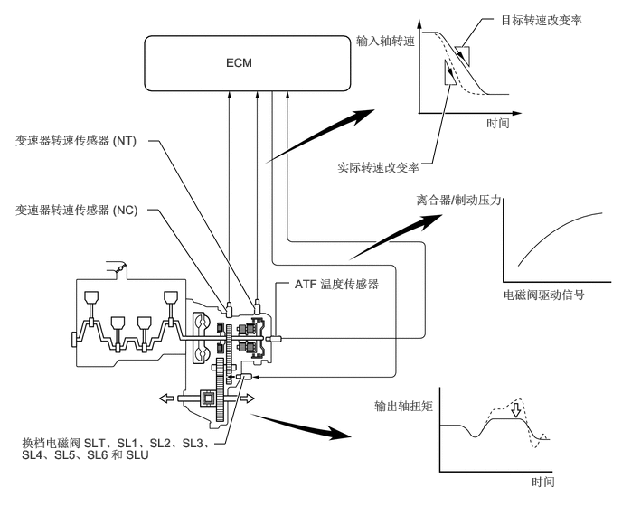
离合器至离合器压力控制
离合器至离合器压力控制用于换档控制。因此，不使用单向离合器即可进行二档或更高档位的换档控制，从而使自动传动桥轻便且紧凑。
使用液压回路（使独立控制离合器和制动器（C1、C2、C3、C4、B1 和 B2）成为可能）和高电流线性电磁阀 SL1、SL2、SL3、SL4、SL5 和 SL6（直接控制离合器压力），ECM 根据传感器传输的信息以最佳液压和时间来相应控制各离合器和制动器，然后进行换档。因此，变速器具有高响应性和卓越的换档特性。
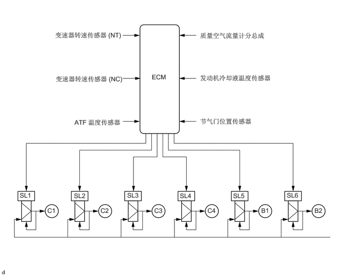
管路压力控制
使用换档电磁阀 SLT 控制管路压力。
通过使用换档电磁阀 SLT，可根据发动机转矩信息以及变矩器离合器总成和自动传动桥总成的内部工作情况对管路压力进行优化控制。
因此，根据发动机输出功率、行驶情况和 ATF 温度可精准地控制管路压力，实现了平稳的换档特性，并且优化了油泵的工作负荷（减少附加损耗）。
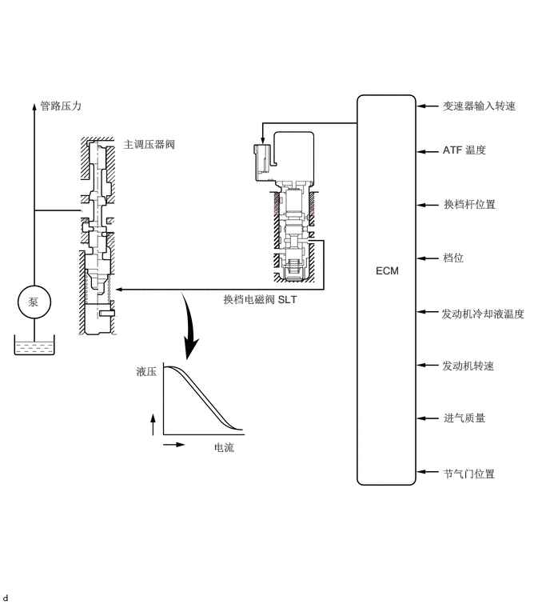
全范围锁止
与先前车型相比，UB80E 以更低的速度和更大的开度执行锁止控制，从而实现了类似于手动变速器的直接动力传输。此外，啮合速率增大，有助于提高燃油效率。
通过增大锁止范围并抑制发动机高速运转，实现了平稳驾驶及高响应性和线性。
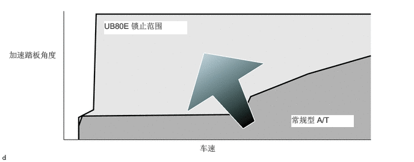
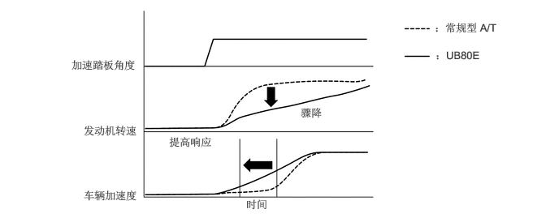
之前，减档时取消锁止以避免换档冲击，但配备采用多片式锁止离合器的变矩器以及考虑到发动机转矩和液压瞬时特性的精确控制后，可持续保持锁止。
在一档和二档及更高档位的低发动机转速范围内，不执行锁止并采用变矩器功能以实现平稳驱动。
| 档位 | 换档杆位置 |
|---|---|
| D、S | |
|
○：工作 X：不工作 *：低发动机转速范围时除外 |
|
| 一档 | X |
| 二档 | ○*（加速期间） |
| 三档 | ○* |
| 四档 | ○* |
| 五档 | ○* |
| 六档 | ○* |
| 七档 | ○* |
| 八档 | ○* |
柔性起动控制
柔性起动控制抑制了不必要的发动机转速增量以提高燃油经济性。
起步时，锁止离合器频繁操作以提高动力传输效率，从而降低了发动机转速。
此外，由于起步时可进行柔性锁止，即使加档至二档后仍可快速进行柔性锁止，从而实现了操纵性能并改善了燃油经济性。
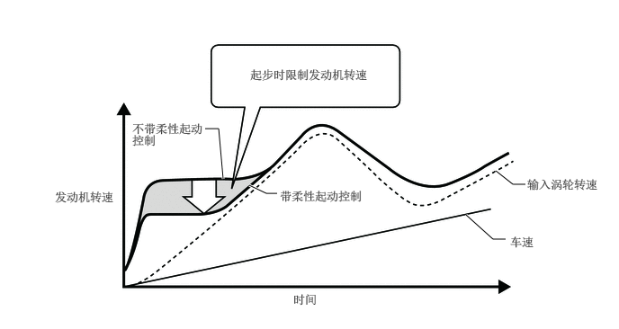
传动系协同控制
加速踏板开度小时，优先采用高效的低发动机转速范围，有助于提高燃油效率并减小噪音。
先前驱动力特性随发动机电子节气门开度和各齿轮传动比的转矩特性而变化。为实现驾驶员的目标驱动力，新控制系统各档位采用独立的发动机转矩请求，从而提高了燃油效率和操纵性能。
加速踏板开度范围小时，优先采用高效的发动机转速范围，从而提高了燃油效率。同时，各档位目标驱动力间的差值较小，实现了平稳减档且不会影响驱动力变化。
用力踩下加速踏板进行加速时，目标驱动力与发动机转速变化直接相关，从而在实现燃油效率和操纵性能高度平衡的同时实现了直接、有力的加速感。
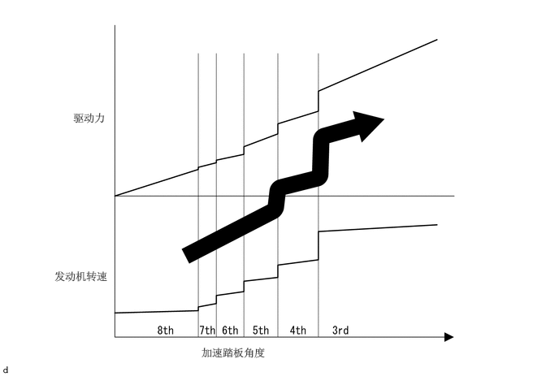
减速减档控制
ECM 执行减档控制以帮助防止发动机转速降低，因此尽量长时间地保持燃油切断控制工作。这样可提高燃油经济性。
利用此控制功能，车辆在八档并开始减速时，在燃油切断控制结束之前，变速器会从八档减至七档、七档减至六档、六档减至五档、从五档减至四档和从四档减至三档，以便使燃油切断控制继续运行。
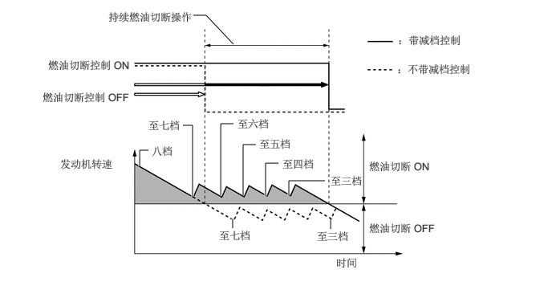
直接连接减档
减档期间，实现了平稳的车辆加速变化和发动机转速的线性变化。
通过精确控制液压及中间档平稳换档，完成从高档位至低档位的减档且无任何不均匀的发动机转速或驱动力。
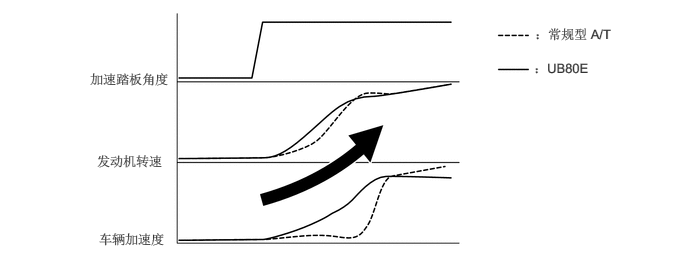
人工智能换档控制（AI-SHIFT 控制）
换档模式通过车速和节气门开度判定自动传动桥档位。
此外，选择 SPORT 模式时，系统切换至换档模式，频繁使用低换档位置（根据车辆加速度选择）并抑制不必要的换档变化。因此，实现了车辆稳定性并提高了车辆加速度。
此外，AI-SHIFT 控制还使 ECM 估算路况和驾驶员意图，从而以最佳方式自动控制换档模式。从而，实现舒适驾驶。
AI-SHIFT 控制包括路况支持控制和驾驶员意图支持控制。
AI-SHIFT 控制基于输入信号判定最佳传动桥控制并自动改变换档模式。
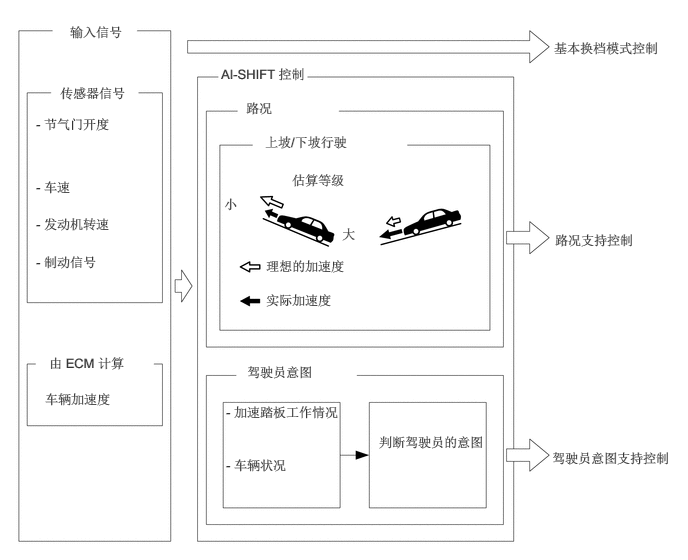
在路况支持控制下，ECM 除了判断车辆是否正在上坡或下坡行驶外，还判断节气门开度和车速。为了在上坡行驶时实现最佳的驱动力，该控制可避免不必要的加档。为了在下坡行驶时实现最佳发动机制动，该控制自动进行减档。
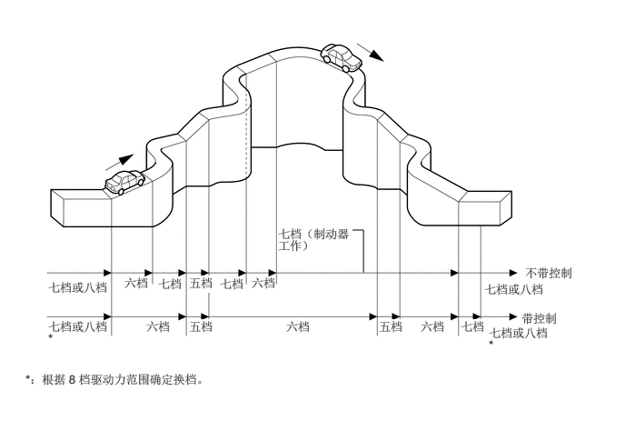
ECM 根据加速踏板的操作和车辆工况估算驾驶员意图以选择最适合驾驶员的换档模式，无需操作常规车型中使用的换档模式选择开关。
多模式自动变速器
换档杆移至 S 时，系统从自动换档控制切换至 S 模式控制，该模式控制下驾驶员可通过移动换档杆或操作换档拨板装置（变速器换档开关总成）至“+”（加档）和“-”（减档）侧手动切换档位。
在换档杆置于 D 的情况下执行自动换档控制时，通过换档拨板装置（变速器换档开关总成）操作进行 D 范围换档拨板主动控制。驾驶员可通过操作换档拨板装置（变速器换档开关总成）至“+”（加档）和“-”（减档）侧，选择所需换档范围。
车辆的行驶速度高于减档的最高安全车速时，无法将换档杆换入低档位。这样可保护自动传动桥。此时，ECM 使组合仪表总成内的蜂鸣器鸣响两次以警告驾驶员。
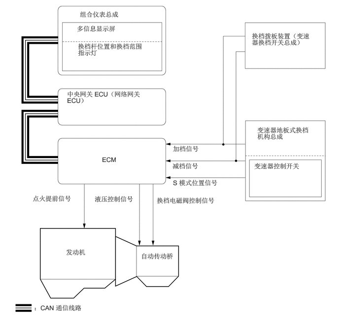
驾驶员可以将换档杆移动到 S 位置以选择 S 模式。此时将根据车速选择四档或五档或六档（但是在进行 AI-SHIFT 控制时，可能会选择三档）。
在此控制下，ECM 在驾驶员选择的可用档位范围内执行最佳换档控制。而对于普通的自动传动桥，车辆停止时，档位切换到一档。
组合仪表总成中的换档杆位置指示灯指示换档杆位置和档位（仅在 S 模式控制或 D 范围拨板主动控制时显示档位）。
如果换档杆在 S 位置时使换档杆保持在“+”位置，无论当前换档范围如何（S1 至 S7），换档范围均将切换至 S8。
为防止发动机转速过大，采用了在发动机转速过大前自动选择更高换档范围的功能。
为了保护自动变速器，采用了在油液温度很高时自动选择更高换档范围的功能。
| 换档范围 | 换档杆位置指示灯 | 可用档位 |
|---|---|---|
| S8 | 8 | 一档至八档 |
| S7 | 7 | 一档至七档 |
| S6 | 6 | 一档至六档 |
| S5 | 5 | 一档至五档 |
| S4 | 4 | 一档至四档 |
| S3 | 3 | 一档至三档 |
| S2 | 2 | 一档至二档 |
| S1 | 1 | 一档 |
D 范围拨板主动控制
换档杆置于 D 位置时，根据换档拨板装置（变速器换档开关总成）的操作情况进行 D 范围拨板主动控制且系统进入换档范围选择模式。方向盘背面配有换档拨板装置（变速器换档开关总成）以允许发动机制动控制和握住方向盘进行加速时的减档操作。
根据换档拨板装置（变速器换档开关总成）操作前的最后档位确定 D 范围拨板主动控制开始时的初始范围。
| 换档拨板装置（变速器换档开关总成）操作前的档位 | 换档拨板装置（变速器换档开关总成）“-”（减档）操作后的初始范围 | 换档拨板装置（变速器换档开关总成）“+”（加档）操作后的初始范围 |
|---|---|---|
| 一档 | D1 | D1 |
| 二档 | D1 | D2 |
| 三档 | D2 | D3 |
| 四档 | D3 | D4 |
| 五档 | D4 | D5 |
| 六档 | D5 | D6 |
| 七档 | D6 | D7 |
| 八档 | D7 | - |
下列条件下自动恢复正常行驶（自动换档控制）：
| 情况 | 条件 | |
|---|---|---|
| 车辆停止 | 车辆停止 1 秒后，恢复正常行驶（自动换档控制）。 | |
| 换档拨板装置（变速器换档开关总成）“+”（加档）操作 | 操作并保持 1 秒或更长时间 | 操作并保持 1 秒或更长时间时，恢复正常行驶（自动换档控制）。 |
| 持续踩下加速踏板 | D1 | 为避免因忘记从 D 范围拨板主动控制切换至正常行驶（自动换档控制）而产生的高负载的情况下持续驾驶，加速踏板持续踩下 3 秒或更长时间时，恢复正常行驶（自动换档控制）。 |
| D2 | ||
| D3 | ||
| D4 | ||
| D5 | ||
| D6 | ||
| D7 | ||
减档补油控制
减档补油控制使用离合器至离合器压力控制调节各离合器和制动器，使其平稳接合和快速分离。此外，传动系协同控制使燃油喷射量增加和发动机转速提高，从而确保了适当的发动机制动力。通过这种方式，实现了平稳快速的减档。
通过换档杆置于 D 或 S 时减档，激活减档补油控制。
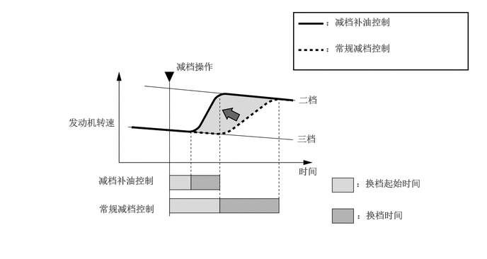
功能
行驶模式选择
根据驾驶员喜好选择行驶模式，可改变加速踏板开度的原动力特性。
可通过操作行驶模式选择开关选择行驶模式。
所选择的行驶模式将显示在组合仪表总成的多信息显示屏上。

| *1 | 电动驻车制动开关总成 | - | - |
| *a | 行驶模式选择开关 | - | - |
| 行驶模式 | 特性 |
|---|---|
| NORMAL 模式 | 该行驶模式可实现最佳操纵性能。 |
| ECO 模式 | 与加速踏板操作相比，ECM 通过逐渐产生驱动力优化燃油经济性和驾驶性能。同时，ECM 通过优化空调性能来支持环保驾驶。 |
| SPORT S/S+ 模式 | ECM 控制加速踏板开度的中间区域内的原动力，使其比 NORMAL 模式下的原动力更大，从而提高了加速性能。此外，提高了加速踏板开度较大区域的发动机转速响应性能，从而实现了运动驾驶。 |
失效保护
传感器或换档电磁阀出现异常时，失效保护功能将操作性能损失降到最低。
有关详情，请参考修理手册。
诊断
ECM 检测到故障时，其将记录故障并储存故障相关信息。此外，ECM 使组合仪表总成内的故障指示灯 (MIL) 亮起以告知驾驶员。
ECM 还将存储故障的诊断故障码 (DTC)。存储在 ECM 的 DTC 通过 DLC3 输出至 Global TechStream (GTS)。
有关详情，请参考修理手册。